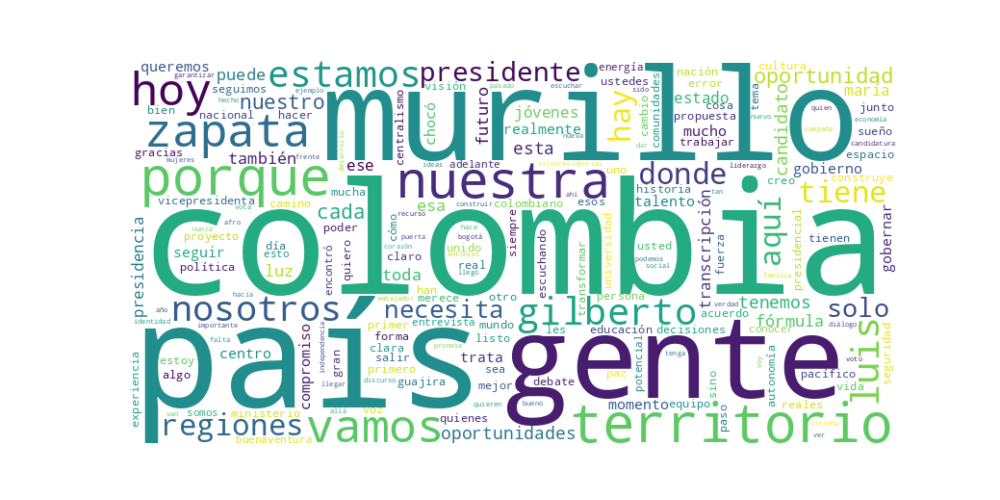

Seguidores: 83,652
Fecha de Análisis: Abril 2026 (Contexto electoral hipotético) Analista: Experto en Comunicación Política
El candidato Luis Gilberto Murillo emplea un estilo de comunicación híbrido, combinando un lenguaje propositivo y técnico-propio de su experiencia como exministro y excanciller-con un tono marcadamente cercano, personal y arraigado en lo territorial. Su discurso no es formalmente académico, sino narrativo y experiencial, utilizando frecuentemente anécdotas personales (su origen en Andagoya, Chocó) para conectar emocionalmente. Es un comunicador que busca humanizar la política, usando emojis, expresiones coloquiales (“a pulso”, “berraca”) y un lenguaje directo, aunque sin perder estructura discursiva. Se posiciona como un puente entre la expertise técnica y la realidad popular.
El tono general es propositivo, esperanzador y de firmeza serena. Evita el lenguaje de odio y la polarización (“no somos de izquierda o derecha”), posicionándose como una tercera vía sensata. Sin embargo, muestra un fuerte tono crítico hacia el centralismo, el abandono histórico de las regiones y la corrupción de "todos los gobiernos". Predomina un sentimiento de urgencia ("es ahora o nunca") combinado con orgullo territorial y un optimismo basado en el potencial humano de Colombia.
La estrategia de comunicación de Murillo está meticulosamente construida para movilizar a los colombianos "de las regiones, las periferias y los territorios históricamente olvidados", presentándose como su vocero legítimo. Su discurso busca evocar un sentimiento de dignidad, pertenencia y poder ciudadano, apelando a que el electorado use su voto como un instrumento para "abrir la puerta" del poder central. Se dirige a un público joven, étnicamente diverso y frustrado con la política tradicional, ofreciendo una alternativa que mezcla experiencia de Estado con narrativa de superación personal. En esencia, no vende solo un programa de gobierno, sino una identidad y una reparación histórica simbólica: la posibilidad de que "un hijo del Chocó profundo" llegue a la Presidencia para gobernar de manera distinta. Su mensaje final es claro: el verdadero cambio no es ideológico, sino geográfico y de representación.
1. Resumen del Patrón de Éxito: El patrón de éxito se fundamenta en una comunicación territorial y propositiva, que combina una crítica frontal al centralismo de Bogotá con una narrativa de empoderamiento regional. El candidato no solo denuncia el abandono histórico de las regiones, sino que lo contrapone con propuestas concretas de descentralización administrativa y económica. El mensaje se construye desde la cercanía física (grabado en los territorios) y la legitimidad experiencial (hablando con la gente), apelando tanto a la indignación por la desigualdad como a la esperanza de un futuro donde las regiones sean protagonistas.
2. Tácticas de Comunicación Clave: * Narrativa del "Aquí y Ahora" vs. "Allá y el Olvido": Construye una dicotomía poderosa entre un "centro" (Bogotá/el establecimiento) que promete, olvida y gobierna desde un escritorio, y un "territorio real" (las regiones) que sufre, trabaja y tiene soluciones. Se presenta como el puente que conecta ambos mundos, pero claramente posicionado del lado de los territorios. * Propositividad Concreta como Antídoto a la Queja: Va más allá de la crítica al ofrecer soluciones específicas y fáciles de visualizar (ej: trasladar ministerios a ciudades específicas). Esto transforma su discurso de la denuncia al "cómo lo vamos a hacer", proyectando imagen de capacidad ejecutiva y planificación. * Apelación a la Identidad y el Orgullo Regional: Encuentra y celebra la identidad única de cada territorio (la cultura wayúu en La Guajira, el potencial del Caquetá). No habla de "pobres regiones", sino de "territorios ricos e identitarios olvidados". Esto genera una poderosa conexión emocional y un sentido de dignidad restaurada. * Construcción de una "Fórmula" como Símbolo de Equilibrio: La mención recurrente de la fórmula #MurilloZapata no es solo un eslogan. Opera como un símbolo de complementariedad (posiblemente geográfica, de género o de experiencia), proyectando un equipo de gobierno preparado y que representa un pacto entre regiones.
3. Temas de Mayor Resonancia: 1. La Lucha contra el Centralismo: El tema unificador y más potente. Se enmarca como la causa raíz de la desigualdad, el abandono y la falta de oportunidades. 2. Desarrollo con Enfoque Territorial: No es desarrollo abstracto, sino específico para cada región: agua en La Guajira, conectividad en el Amazonas, turismo en Caquetá. 3. Seguridad desde los Territorios: Vincula la seguridad no solo a la fuerza pública, sino a la inversión social y la presencia legítima del Estado en las regiones, alejándose de un discurso puramente punitivo. 4. Oportunidades para Jóvenes y Niñez: Lo plantea como una deuda intergeneracional y la promesa última de su proyecto: un país donde el lugar de nacimiento no determine el futuro.
4. Perfil de la Audiencia Implícita: El discurso se dirige de manera primaria a votantes de regiones fuera del centro del país (Caribe, Pacífico, Amazonía, Orinoquía) que se sienten históricamente marginados por el poder central. Es un mensaje que busca resonar tanto en la base leal de estos territorios que anhelan reconocimiento, como en el votante joven e indeciso de estas zonas, cansado de la política tradicional y atraído por un mensaje de cambio estructural y empoderamiento local. El lenguaje es directo, evita tecnicismos y habla "con" la gente, no "a" la gente.
5. Conclusión Estratégica: La clave fundamental del poder de su discurso es la reivindicación geopolítica como eje de campaña. Mientras el discurso político tradicional en Colombia suele debatir en el eje ideológico izquierda-derecha o en promesas sectoriales (salud, educación), este candidato cambia el tablero. Su propuesta es una reorganización física y política del poder. Lo potente es que logra convertir un tema de estructura administrativa (descentralización) en una narrativa emocional cargada de identidad, justicia histórica y esperanza concreta. No se limita a pedir el voto; invita a las regiones a ser co-autoras de un nuevo pacto nacional, posicionándose no como un salvador desde el centro, sino como el vocero y facilitador de esa revolución territorial.

Caption: Lamentablemente continúan los ataques contra nuestras Fuerzas Militares y de Policía, con un impacto terrible para el país. El atentado contra la Tercera Brigada del Ejército en el sur de Cali merece toda nuestra atención. Por eso, cada vez es más urgente que abordemos dentro de la campaña los problemas de seguridad de Colombia desde más perspectivas y con apoyo de países como Estados Unidos. @luisgmurillou es el único en el tarjetón con los contactos y herramientas para lograrlo. Por eso sé que la fórmula #murillozapata es la que el país necesita.
Likes: 949 | Comentarios: 61 | Reproducciones: 3,055
Ver en InstagramCaption: La Guajira no necesita más discursos bonitos, necesita decisiones valientes. Hoy lo dijimos de frente, sin rodeos y con la gente: no es normal que un territorio tan rico siga viviendo en el abandono. No es normal que el agua siga siendo un privilegio y no un derecho. No es normal que el Estado aparezca solo en campaña y desaparezca cuando toca cumplir. Aquí no vinimos a prometer, vinimos a incomodar a los que han vivido del olvido. Porque gobernar es hacerse cargo, es dejar de mirar para otro lado y asumir que La Guajira merece dignidad, inversión y respeto. ✊
Likes: 1,025 | Comentarios: 30 | Reproducciones: 3,861
Ver en InstagramCaption: ¡Florencia nos demuestra que la oportunidad está en las regiones! 🇨🇴✨ Desde la Galería La Concordia en el Caquetá, reafirmamos nuestro compromiso: vamos a transformar el poder centralista dándole voz y recursos a los territorios. Aquí no vemos problemas, vemos potencial, cultura y gente trabajadora que alimenta a todo un país. Nuestro gobierno no se quedará en los escritorios de Bogotá; será un gobierno de botas y territorio, apoyando al empresario, al campesino y fomentando el turismo como motor de cambio. Este 31 de mayo, vota por un cambio real. Vota por la fórmula que conoce y siente las regiones. ✅ Murillo Presidente | Luz María Zapata Vicepresidenta #laoportunidadescolombia
Likes: 809 | Comentarios: 91 | Reproducciones: 3,433
Ver en Instagram